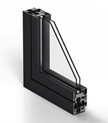
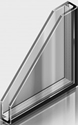
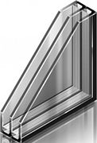
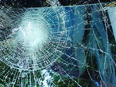
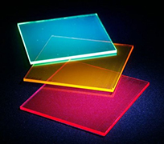
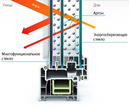
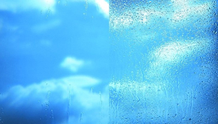
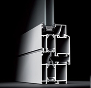

Стеклопакет - прозрачный элемент окна или фасада из двух и более стекол,склеенных между собой по контуру.
{kind=link}
К выбору стеклопакетов нужно подходить осмысленно и ответственно,поскольку его характеристики также важны как характеристики профиля, в который он устанавливается. Правильно подобранный стелопакет - залог успешного выполнения поставленных задач. Компания Prestige Facade предлагает большой ассортимент стеклопакетов разной прочности, шумоизоляции, количества воздушных камер, цвета стекла. Каждый стеклопакет имеет формулу, по которой он изготавливается. Формула включает в себя толщину стекол в мм, величину пространства между стеклами в мм, обозначение газа, которым заполняется пространство между стеклами. Все зависит от требований и способа эксплуатации будущих конструкций. Все стеклопакеты изготавливаются в соответсвии с ГОСТ РФ имеют необходимые сертификаты и гарантию.
{kind=link}
{kind=link}
Популярные стекла в составе стеклопакетов
Закаленное стекло- стекло получаемое при нагреве до температуры 650-680 °C с последующим мгновенным охлаждением холодным воздухом с обеих сторон. В результате такой процедуры при разрушении стекло распадается на множество осколков с тупыми гранями и не способно повредить кожный покров человека. Также повышается термостойкость стекла. Часто используется при "замене холодного остекления на теплое» и при остеклении витрин.
{kind=link}
Триплекс- многослойное стекло, производится путем склеивания двух или более селикатных стекол между собой специальной пленкой,способной при ударе сдерживать осколки. Применяется при остеклении фасадов,входных групп,витрин.
{kind=link}
Тонированное стекло в массе - производится путем добавления красящих компонентов в жидкую стекломассу в момент варки стекла. Тонированное стекло применяют в интерьерах. При производстве стеклоалюминиевых фасадов. Так же тонированное стекло используют при замене холодного остекления на теплое, чтобы не менять внешний вид фасада здания, если есть необходимость, при производстве стекло алюминиевыхфасадов.
{kind=link}
Энергосберегающее стекло - производится при нанесении на стекло тонкого покрытия с ионами серебра, которое пропускает видимый глазом свет и отражает невидимое тепловое излучение. В холодное время года энергосберегающее стекло отражает тепловое излучение от нагревательных приборов обратно в помещение.
Популярные стеклопакеты
{kind=link}
Самоочищающийся - стеклопакет, в составе которого внешнее стекло покрыто тончайшим слоем оксида титана, который притягивая воду расщепляет грязь и пыль.Покрытие предает стеклам изящный голубоватый оттенок
{kind=link}
Энергосберегающий - стеклопакет в состав которого входит Энергосберегающие стекло, а пространства между стеклами заполняются газом аргон или ксенон. Газ предохраняет серебреное напыление от окисления
{kind=link}